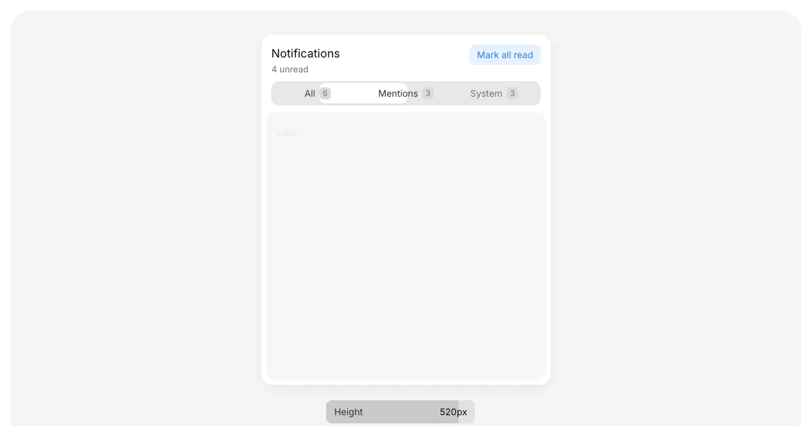

Notification Center
An activity inbox with sliding filter tabs and counts, grouped timeline cards with avatars or badges, unread dots, inline actions, mark-all-read and an empty state.

Usage
Add glowkit next to eframe:
cargo add glowkit eframeThen draw it inside any egui Ui:
use glowkit::prelude::*;
use glowkit::interactions::{BoardNotice, BoardNotifications};
let mut inbox = vec![BoardNotice::mention("LK", "Livia mentioned you", "Can you review this?", "2m").actions(&["Reply"])];
ui.add(BoardNotifications::new(&mut inbox));Prefer to own the code? The glowkit CLI copies this component's source into your project, shadcn-style:
cargo install glowkit-cli
glowkit add board-notification-centerEquivalent to
If you know this pattern from BoardUI, Notification Center is the Rust version: an original egui implementation, not a port, that runs natively and in WebAssembly.
- Notification CenterBoardUI
About Notification Center
Notification Center is one of 17 components in glowkit's Overlays & Feedback category. It lives in the glowkit-interactions crate, enabled by the interactions feature of glowkit (on by default). It reads its colors from the active glowkit theme, so it matches the rest of your app in light, dark or a custom brand theme, and every color, size and timing has a setter to override it.
Overlays that open and close with springs: toasts, alert dialogs, morphing modals, dynamic-island notifications, guided tours, banners, undo bars, confirm sheets and feedback widgets.